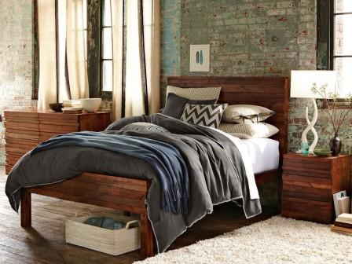
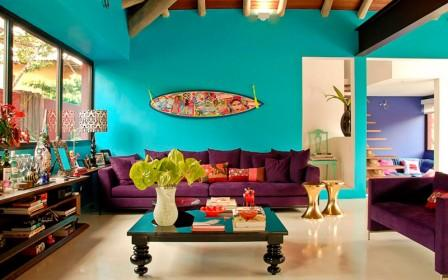
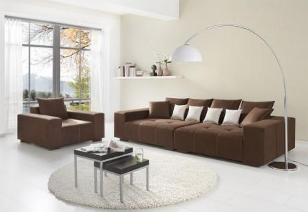
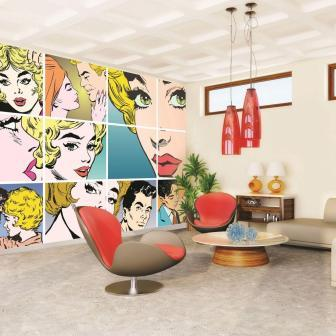
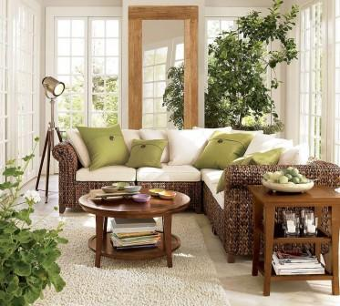
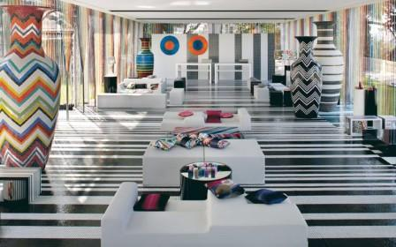

Стиль Гранж в интерьере – это создание упрощенных копий исторических интерьеров за счет современных материалов и стилизованных изделий. Гранж хорош для любителей классических интерьеров, трезво оценивающих возможности своего бюджета и метраж помещения.
Классика без лепнины, позолоты, витиеватой резной мебели, без мрамора и дорогого дерева – это гранж. Оклейте кабинет темными однотонными обоями, кладите на пол кремовую лакированную доску, повесьте легкие занавеси до пола из розовой вуали, разместите мебель простых силуэтов из светлой древесины со стеклянными фасадами, украсьте белый диван цветными бархатными подушками, добавьте несколько броских элегантных аксессуаров – стиль будет выдержан безукоризненно.
Стиль Китч в интерьере некоторые считают символом отрицания искусства, однако это не мешает дизайнерам создавать интересные китч-интерьеры. Этот термин пришел в дизайнерскую среду из сферы культуры, он обозначает упор на экстравагантность, крикливость, апофеоз антиклассики.
Новомодные интерьры в стиле китч одинаково успешно могут подчеркнуть состоятельность и скрыть бедность. Это своего рода протестное отношение к устоявшимся стереотипам планировки и обстановки жилья, выражающееся с помощью использования, с одной стороны, стандартизированных элементов украшения, с другой – эксклюзивных аксессуаров и отделок.
Если Вы предпочитаете стиль минимализм в интерьере, то позаботьтесь не только о соблюдении всех канонов стиля, но и о придании интерьеру индивидуальных черт.
Стиль минимализм – это не просто наполнение помещения мебелью и аксессуарами определенного образца, это – моделирование пространства с помощью цвета, освещения, простейшего набора необходимых вещей и немногочисленных компактных броских аксессуаров, функциональность которых также сохраняется.
В идеале доминирующий цвет стен минималистских помещений – белый. Однако последние тенденции в мире дизайна интерьеров позволяют окрашивать стены в пастельные тона, иногда – в густые цвета теплой палитры, однако не все помещение, а одну или две стены.
Стиль Поп-арт в интерьере очень эмоциональный и энергичный, поэтому он особенно близок молодежи, готовой жить в вечном движении. Даже из того факта, что буквально название этого стиля искусства, в том числе интерьерного дизайна, переводится как «отрывистый хлопок», следует, что его задача – удивлять, вгонять в легкий шок.
Яркие цвета поп-арта призваны напоминать о витринах супермаркетах, в которых продается все, что может быть использовано в интерьере. Образы популярных продуктов потребления преподносятся как произведения искусства, ваш дом призван стать яркой оберткой совершающейся здесь ежедневной жизни.
Здоровый образ жизни, использование только натуральных продуктов и изделий, минимализация присутствия техногенности в повседневной жизни – одно из веяний нынешней эпохи. Армии «натуралистов» во всем мире добиваются адаптации продукции ведущих производителей под свои запросы, в т.ч. – производителей строительных материалов, интерьерного текстиля и т.д. Эко-стиль в интерьере – это не просто дизайнерский продукт, это философия жизни, в центре которой – бережливое отношение к природе, увлеченность миром живого, приверженность к ее естественным дарам.
Светлое незагроможденное пространство – обязательное условие эко-интерьера. Цветовая гамма – теплая, естественных природных тонов (песочный, древесный, земляной). Дерево – один из опорных материалов, его можно использовать в обшивке полов, стен, потолка, варьируя текстурно-нейтральные поверхности и потолочные балки, напольные древесные мозаики, стенные панели.
Стиль Фьюжн в интерьере – выбор креативных людей, для которых обыденное, рядовое не имеет ценности, не допускающих нейтральности и невыразительности, воспринимающих быт как площадку для непрерывного творчества. Фьюжн – стиль «сумасшедших» вещей, идеи которых возникают в экстравагантных грезах мастеров дизайна. Фьюжн позволит вам украсить спальню всего лишь одной напольной вазой – при условии, что это будет античная амфора до потолка, занимающая целый угол, или же разместить в гостиной огромный диван, отороченной не классическими «рюшами», а пестрым «заборчиком» из разноцветных пластиковых «бревнышек».
Иными словами, концепция фьюжн – материализованная фантазия, помещенная в соответствующий контекст. Разумеется, это один из самых дорогих стилей, ведь речь идет о наполнении дома авторскими работами.
Вернуться на главную